En esta página aprenderás los distintos tipos de descargas epileptiformes.
PUNTAS
Una punta es un tipo de descarga epileptiforme que tiene una duración de menos de 70 milisegundos.
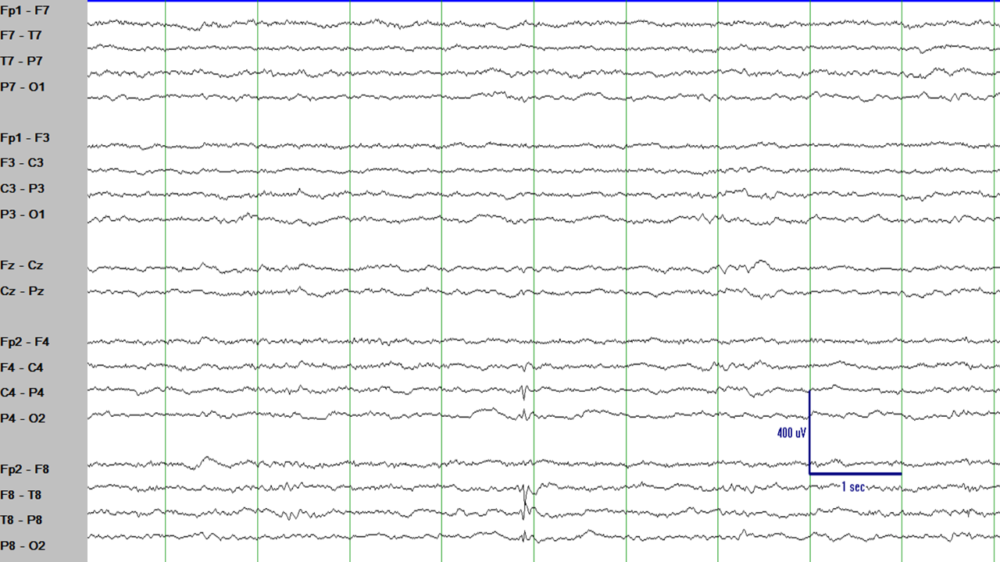
Esta es una punta en T8/P4 (en la parte inferior de la imagen). Es un elemento del EEG
de contorno afilado que rompe el ritmo y que tiene un campo eléctrico que tiene sentido anatómicamente. Es
una punta porque es delgada (menos de 70 milisegundos).
ONDAS AGUDAS
Una onda aguda es similar a una punta, pero más ancha, con una duración de entre 70 y 200 milisegundos.
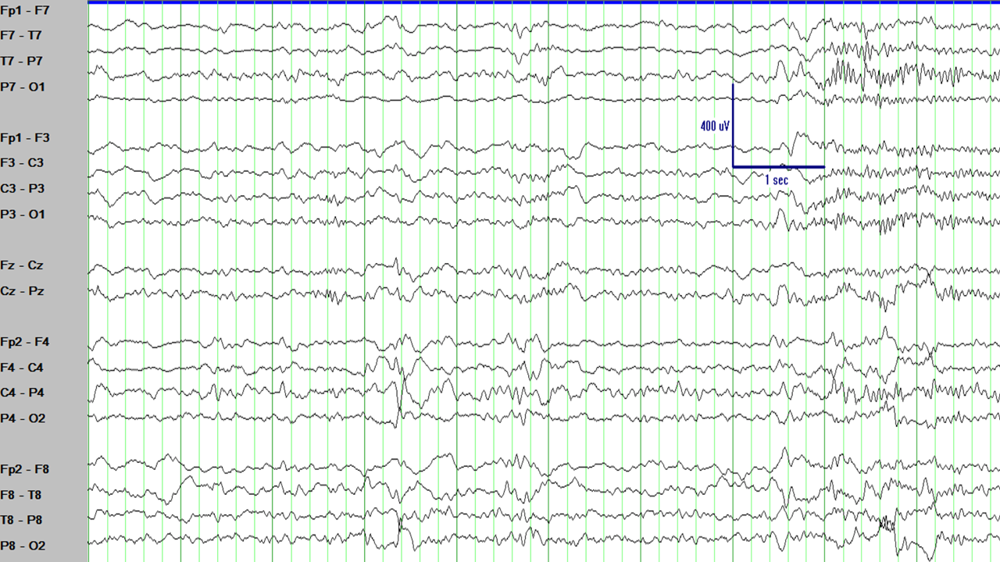
Esta descarga epileptiforme en P4/P8 es más ancha de 70 milisegundos pero más estrecha
que 200 milisegundos: es una onda aguda. Como referencia, la separación entre las líneas verdes verticales
es de 200 milisegundos.
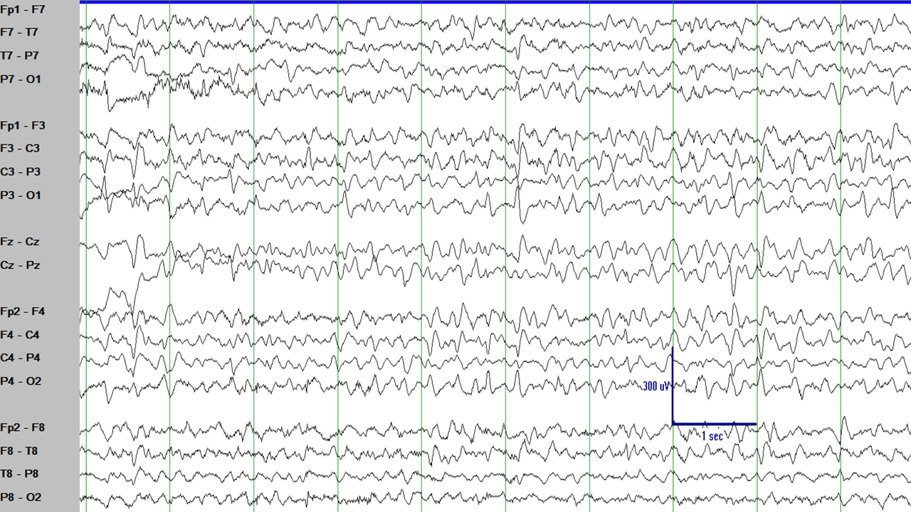
Hay múltiples ondas agudas en este segmento de EEG, con máximo en C3/P3, P7, y C4/P4.
COMPLEJOS DE PUNTA-ONDA
El concepto de complejos punta-onda es bastante intuitivo: imagina una punta seguida de una onda lenta. Eso es un complejo punta-onda.
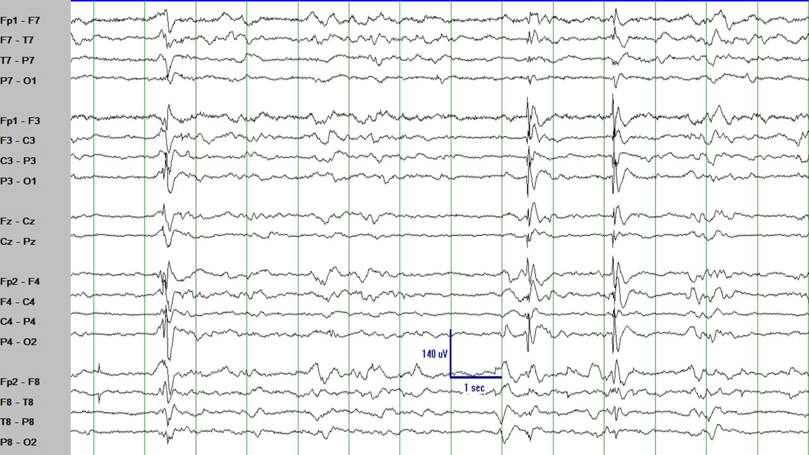
Hay al menos tres descargas epileptiformes en este segmento del EEG que claramente rompen el ritmo, tienen un contorno
afilado, y afectan a la mayoría de los canales del EEG (campo eléctrico generalizado). ¿Ves la punta y después la onda lenta?
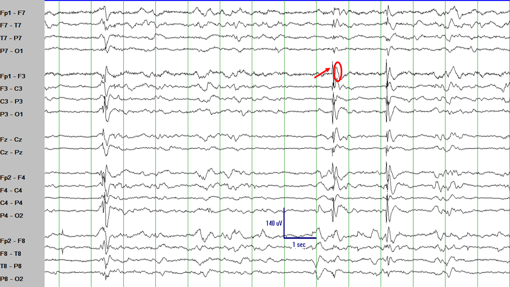
Misma imagen que arriba enfatizando una punta (flecha roja) y su onda lenta (círculo rojo).
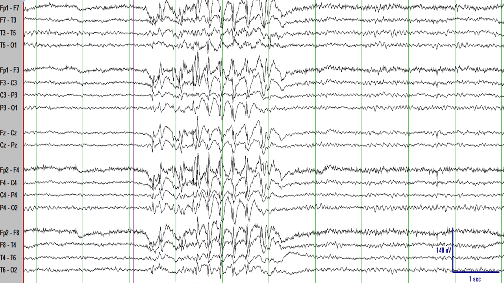
Hay un brote de complejos punta-onda en este segmento del EEG. ¿Puedes identificar la punta y la onda lenta?
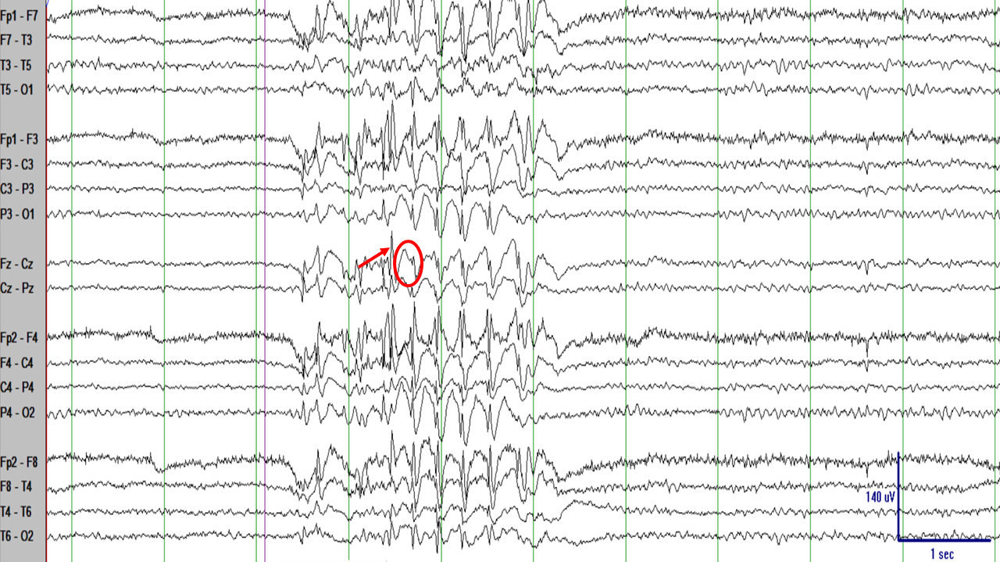
Misma imagen que arriba enfatizando una punta (flecha roja) y su onda lenta (círculo rojo).
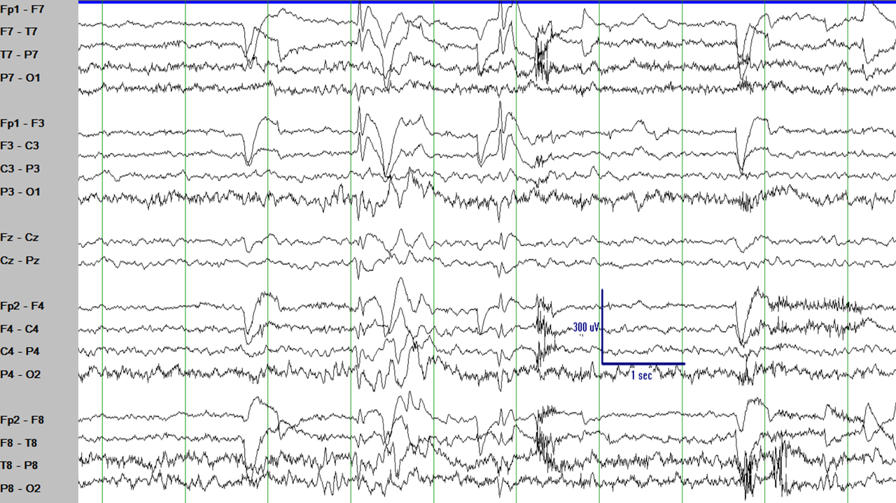
Otro ejemplo de complejos punta-onda que, en este caso, son más irregulares que en los ejemplos previos.
POLIPUNTAS Y COMPLEJOS DE POLIPUNTA-ONDA
Cuando una punta parece tener varias fases se denomina polipunta.
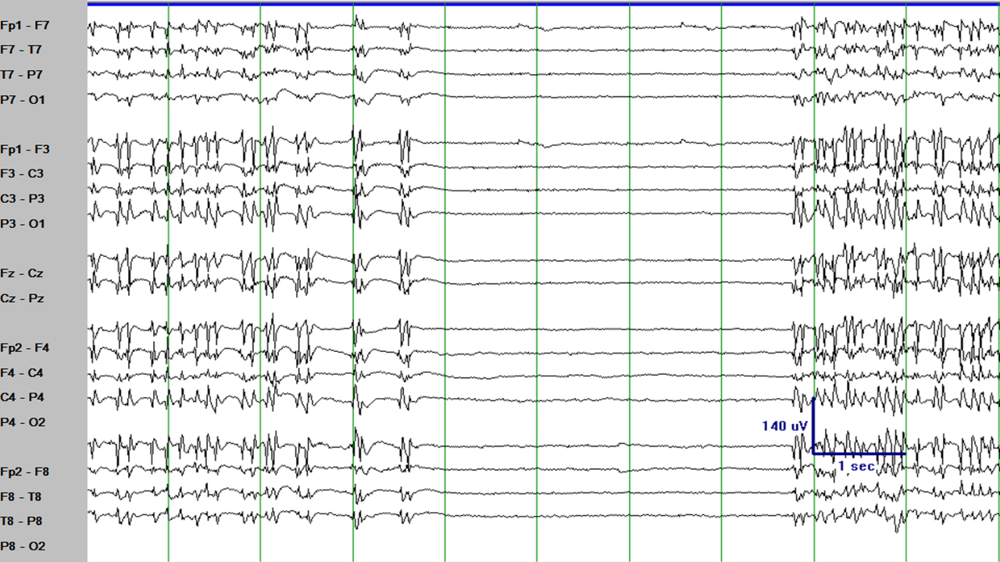
Algunas de las puntas aparecen separadas de otras, pero muchas de ellas parecen como una descarga individual con varias fases
(una polipunta). Hay bastante subjetividad al decidir qué puntas son puntas individuales y cuáles son polipuntas.
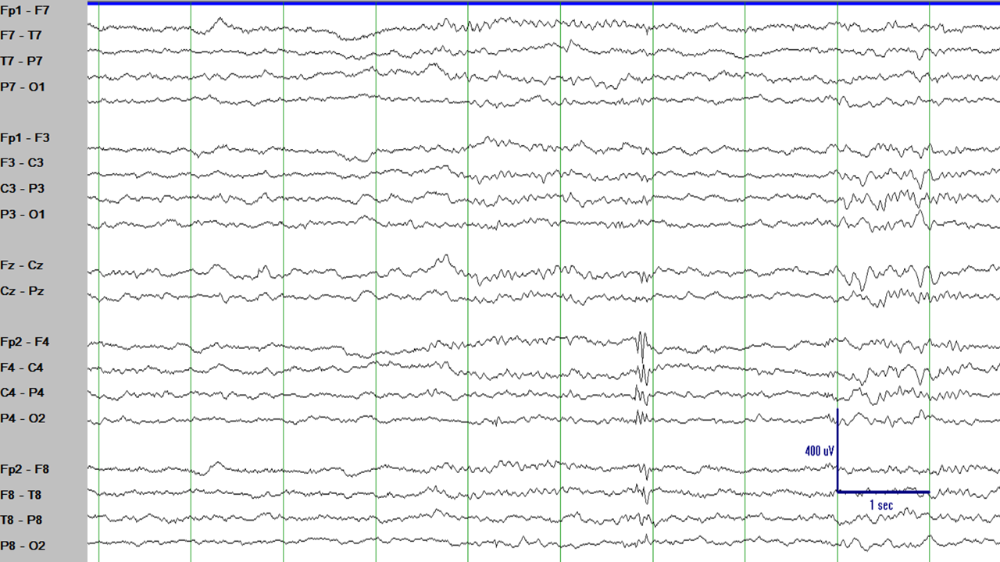
Esta descarga epileptiforme con máximo en F4 tiene múltiple fases y puede ser considerada una polipunta.
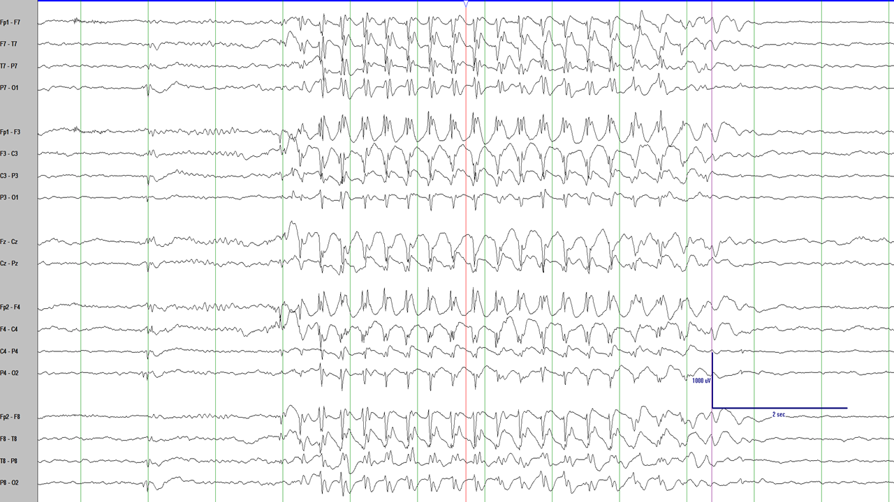
Una descarga epileptiforme con varias puntas seguidas de una onda lenta se llama complejo polipunta-onda.
Un ejemplo se señala con la flecha roja.
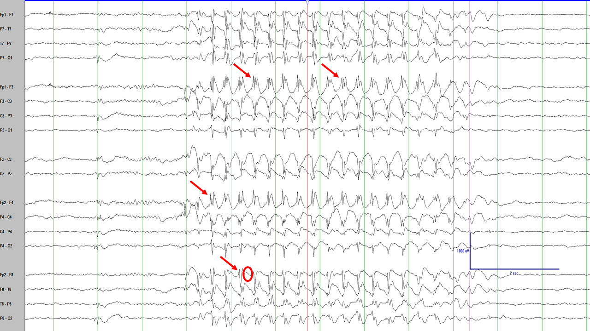
Misma figura que arriba enfatizando el componente de polipunta (flechas rojas) y el componente de onda lenta (círculo rojo).
RESUMEN
Está bien familiarizarse con los tipos principales de descargas epileptiformes: puntas, ondas agudas, complejos punta-onda,
polipuntas, y complejos polipunta-onda. Quizá te hayas dado cuenta de que las puntas y las ondas agudas son frecuentemente
focales o multifocales mientras que las polipuntas y los complejos polipunta-onda aparecen frecuentemente como descargas epileptiformes
generalizadas. Este es generalmente el caso, pero con muchas excepciones. El tipo de descargas epileptiformes y su distribución
ayudan a identificar el síndrome epiléptico. Las cosas se van a poner mucho más interesantes y divertidas pronto.